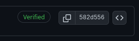

Signing Git Commits
by Aaron Crowder on in tutorials

Have you ever noticed the “verified” badge next to a commit on GitHub? A few years ago I did an wondered how I could get that on my own commits. After a little googling I realized it was because those commits were signed.
Signing a commit with a GPG key is something natively supported by Git as it turns out. Now this is one of the first things I set up on a new dev machine. Setting it up is fairly straight forward.
Prerequisites
You will need to have gpg and git installed. Additionally you will need
to use the command line (terminal). These instructions will work on both
OSX and Linux.
Creating a GPG key
To create a GPG key run:
gpg --gen-key
Once created you can run the following:
❯ gpg --list-keys
/home/crowdersoup/.gnupg/pubring.kbx
------------------------------------
pub rsa3072 2023-08-05 [SC] [expires: 2025-08-04]
2E16095B42BB50E73C4B334E2BB8D361D964BC2F
uid [ultimate] Aaron Crowder <aaron@crowder.cloud>
sub rsa3072 2023-08-05 [E] [expires: 2025-08-04]
Sign your commits
To tell git to sign your commits with your new GPG key you need to update
your global git config. You can edit the file (git config --global -e)
or run git config --global user.signingkey <UID>.
I also like to make sure I always sign my commits by default so I’ll set
commit.gpgsign to true (git config --global commit.gpgsign true).
That way any time I run git commit that commit will get signed.
Tell GitHub about your GPG key
In order to tell GitHub about your GPG key you need to get your public key. You can do this by running:
gpg --armor --export <UID>
You will then copy the output of this command, and paste it here. Once saved any commits you sign and push to GitHub will now have the “verified” badge!